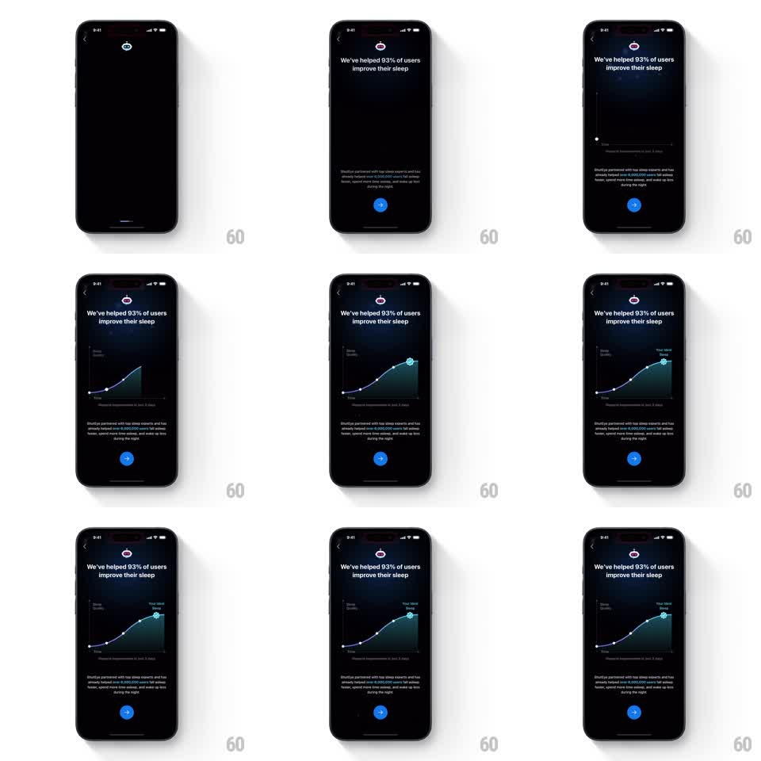

Media
Frame-by-frame

Rebuild this animation 1:1: ShutEye's sleep-quality proof graph - under "We've helped 93% of users improve their sleep", an ascending line graph draws itself left to right, its area filling and a final value chip popping on the last point.

Rebuild this animation 1:1: ShutEye's sleep-quality proof graph - under "We've helped 93% of users improve their sleep", an ascending line graph draws itself left to right, its area filling and a final value chip popping on the last point.
## Integration
Integration: stack-agnostic spec - springs given as stiffness/damping, timed motions as duration + curve; map every value to your framework and animation library of choice.
## Scene
A dark onboarding page with the ShutEye eye logo and the headline "We've helped 93% of users improve their sleep". Below, a chart panel (Sleep Quality over time) with an ascending curve, point markers, and a closing value chip ("Your Ideal Sleep") at the final peak. Supporting copy and a blue arrow button sit beneath.
## Motion spec
Pattern: self-drawing proof graph, ~2.5s.
- The headline block fades up (300ms), then the chart axes and grid fade in (300ms).
- The line draws from left to right along its path (1.2s, ease-in-out), each point marker popping as the line passes through it (scale 0.5 to 1, 150ms).
- The gradient area under the line fills in behind the stroke, masked to the drawn portion.
- At the final peak, the value chip pops in (scale 0.6 to 1, spring stiffness 380 damping 16) with a soft glow.
- The supporting copy fades up last (300ms).
## Calibration
- The curve trends upward with visible dips - it is a real sleep curve, not a straight ramp.
- The chip lands only after the line fully arrives at the last point.
## Reduced motion
Graph appears fully drawn.
## Don't miss
- The line is bright blue over a dark panel with a subtle gradient fill.
- The final point is emphasized: larger marker, glow, and the chip anchored above it.